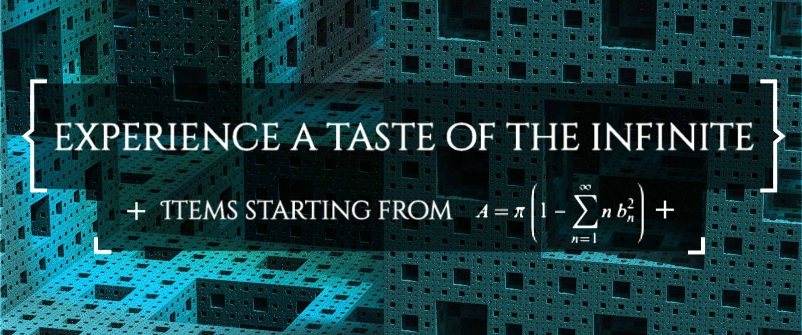
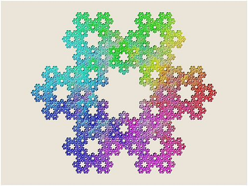
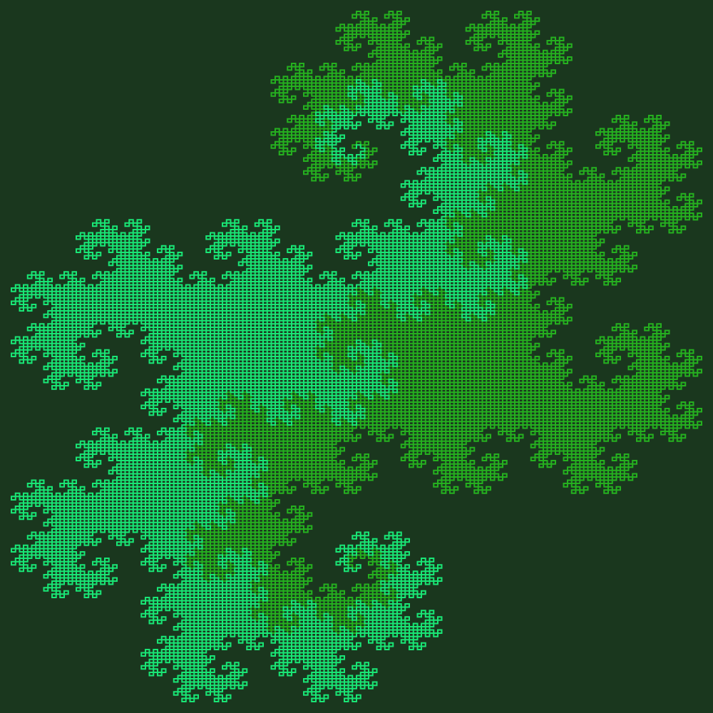
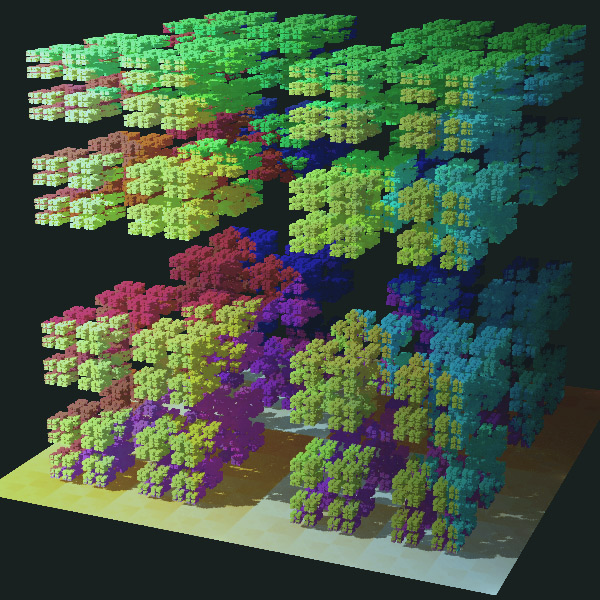
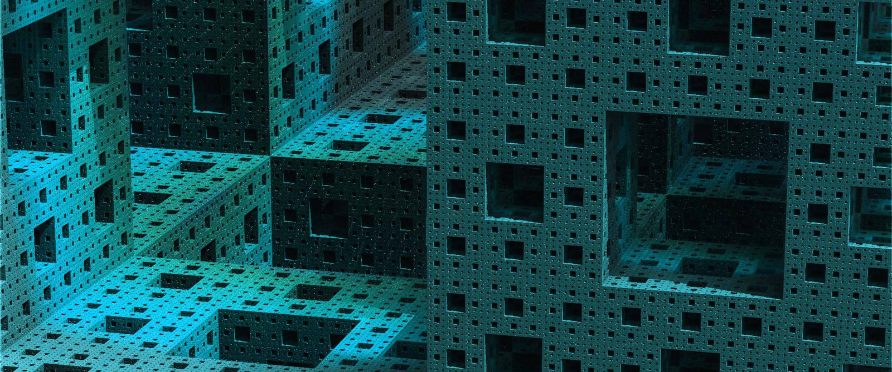
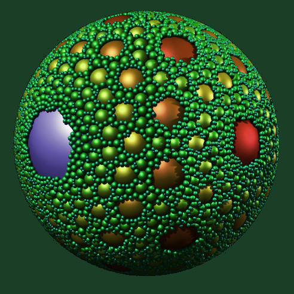
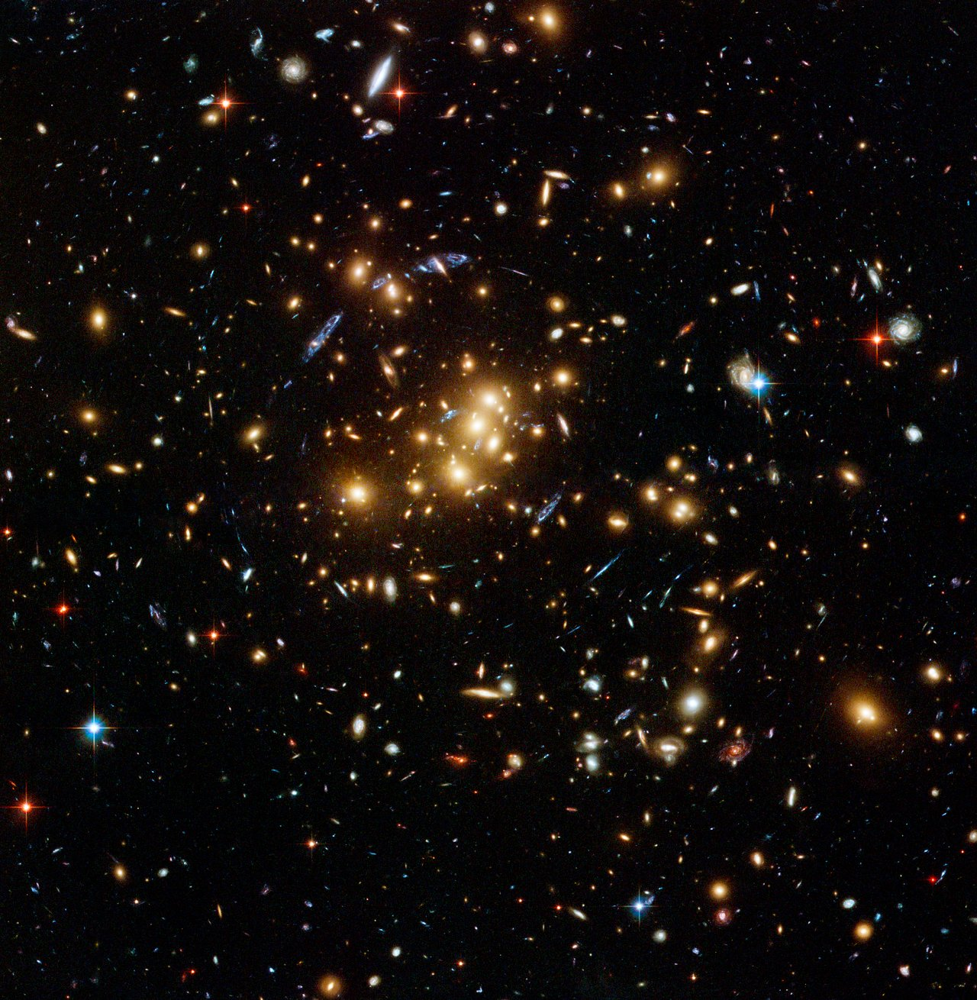

View the Menu
Whether you want 1.3 dimensions or 2.98, we have what you want. Consume now, before it happens.
STARTERS

Koch Snowflake
feels like eating nothing at all!

Twindragon Boundary
the edge of satisfaction

Cantor Dust
our lowest calorie starter
MAINS
Sierpinski Tetrahedron
your favourite triangles, extruded

Menger Sponge
soak it all up, babey
Mandelbulb
mandelbrot. upgraded
DESSERTS

Apollonian Sphere
feel the spaces inbetween
Coastline of Great Britain
refreshing. salty.

Galaxy Clusters
the taste of cosmic latte